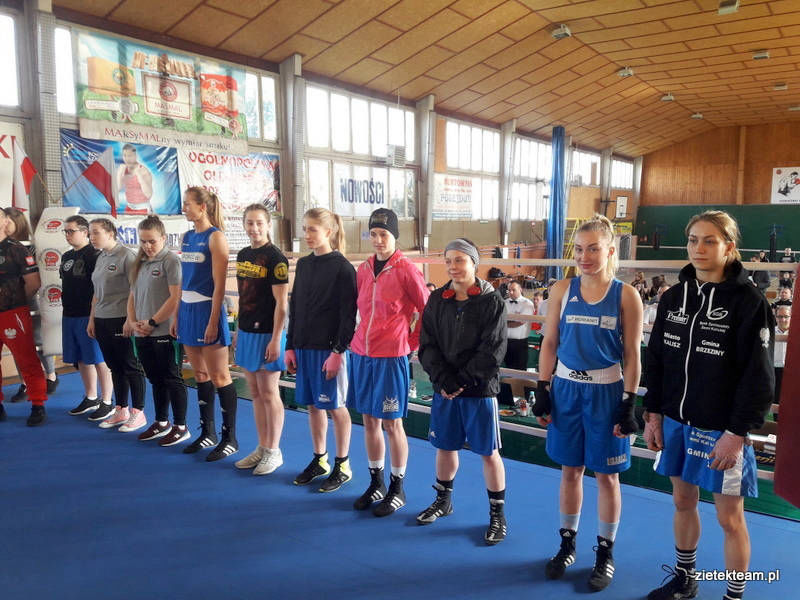
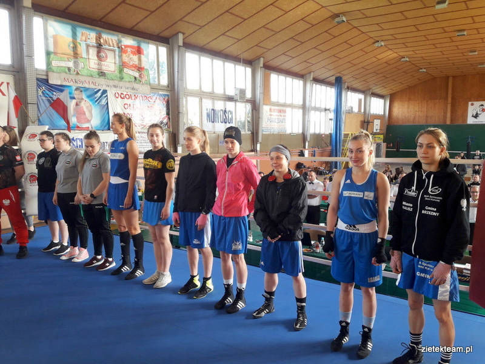

Wpisy 2019
V Ogólnopolski Turniej bokserski o Puchar Włókiennika Łódź
W pierwszy dzień grudnia zawodnicy KS ZIĘTEK Team startowali w V Ogólnopolskim Turnieju bokserskim o Puchar Włókiennika Łódź.
Klub reprezentowali Julia Durkiewicz ( 75kg), Norbert Kusz (71kg) i Sebastian Kusz ( 75kg).
Julia po raz kolejny pokazała się ze znakomitej strony pokonując swoją rywalkę przed czasem wygrywając walkę przez RSC. Bracia Kusz swoje pojedynki zakończyli wygranymi 3:0.

Tego samego dnia w kaliskiej Hali OSRiR odbywał się XXII Turniej Bokserski im. Tadeusza Grzelaka, na którym trenerzy Mariusz oraz Bartosz odebrali puchar za zajęcie 3 miejsca drużynowo na Mistrzostwach Polski Młodzików w Grudziądzu.
XXXVIII Międzynarodowy Turniej Bokserski o Złotą Rękawicę Wisły
W dniach od 14-16 grudnia w Krakowie odbywał się XXXVIII Międzynarodowy Turniej Bokserski o Złotą Rękawicę Wisły
Nasz klub ZIĘTEK Team reprezentowali bracia Norbert i Sebastian Kusz, oboje rywalizowali w kategorii wiekowej kadet. Norbert w 70 kg zdeklasował swoich przeciwników i w finale pokonując swojego rywala Omara Moutuk (DKB Dzierżoniów) zdobył 1 miejsce i złota rękawice. Sebastian zaś w pierwszej walce szybko rozprawił się ze swoim rywalem wygrywając przed czasem w 3 starciu.
W finale po wyrównanej walce sędziowie wytypowali zwycięstwo zawodnika Bartosza Stepień (Orzeł Oleśnica) i tym samym Sebastian Kusz zdobył 2 miejsce i srebrna rękawice Wisły. Był to ostatni turniej boksu olimpijskiego z udziałem naszych podopiecznych w 2018 r. zakończony sukcesami naszych zawodników.
Zawodnicy KS ZIĘTEK Team powracają z tarczą z zawodów Pucharu Europy
Zawodnicy KS ZIĘTEK Team z powodzeniem wzięli udział w Pucharze Europy, który odbył się w Chorwacji 08-10 lutego 2019 r.
Bracia Sebastian i Norbert Kusz byli najlepsi w swoich kategoriach wiekowych zdobywając Puchar Europy. Norbert Kusz zdobył złoty medal i puchar w kategorii junior, Sebastian Kusz był najlepszy w kategorii kadet, również zdobywając złoty medal i Puchar Europy.
Na 3 stopniu podium w tej samej kategorii wiekowej stanęli Julia Kabzińska i Olaf Pera.
Srebrnymi medalami musieli zadowolić się Marek Mazur w kategorii Masters i Dawid Zaborowski w kategorii Senior.
To pierwszy i w tym roku udział naszych zawodników w rywalizacji międzynarodowej.
Klub Sportowy ZIĘTEK Team doceniony przez Samorząd Województwa Wielkopolskiego
Dnia 22 lutego bieżącego roku w Kaliszu odbyło się Podsumowanie Roku Sportowego 2018, podczas którego zawodnicy, trenerzy, kluby oraz działacze otrzymali wyróżnienia i nagrody za swoje osiągnięcia w ubiegłym roku.
W złotej dwunastce kaliskich sportowców piąte miejsce zajął nasz wybitny zawodnik Aleksander Stawirej.
Wielu naszych zawodników oraz trenerzy otrzymało nagrody dla medalistów mistrzostw Polski i Międzywojewódzkich Mistrzostw Młodzików.
Najmilszym zaskoczeniem była wiadomość, że KS ZIĘTEK Team zajął I miejsce w Kaliszu w Państwowym Systemie Sportu Młodzieżowego.
Na pamiątkowym szkle wyrazy uznania i podziękowania za wkład w rozwój sportu w Województwie Wielkopolskim złożył klubowi Marszałek Województwa Wielkopolskiego Pan Marek Woźniak.
Nasz klub w ubiegłym roku w Mistrzostwach Polski w kickboxingu zdobył 33 medale, w tym 15 złotych medali, 9 srebrnych i 9 brązowych oraz 1 srebrny i 1 brązowy medal Mistrzostw Świata, natomiast w Mistrzostwach Polski w boksie 6 medali, w tym 1 złoty, 2 srebrne i 3 brązowe.
W Systemie Sportu Młodzieżowego w roku 2018 zdobyliśmy 113 punktów w kickboxingu i 201 punktów w boksie.
Mistrzostwa Ziem Zachodnich w Kickboxingu full contact im. Pawła Mikołajczaka oraz XXII Turniej Bokserski im. Włodzimierza Pawlaka
Na zdęciu od lewej "od góry" trener Karen Aslanian, zawodnicy: Julia Kabzińska, Weronika Walczak, Beniamin Jamroziak, trener Bartosz Gromada, od lewej "na dole" zawodniczki Aleksandra Trawczyńska, Gabriela Werner
W ubiegłą sobotę dnia 2 marca 2019 r. w Rydzynie odbyły się Mistrzostwa Ziem Zachodnich w Kickboxingu full contact im. Pawła Mikołajczaka oraz XXII Turniej Bokserski im. Włodzimierza Pawlaka.
KS ZIĘTEK Team reprezentował jeden zawodnik i cztery zawodniczki.
Wszyscy startujący zawodnicy z KS ZIĘTEK Team wywalczyli złote medale tj. w boksie:
Beniamin Jamroziak +81 kg
Julia Kabzińska –50 kg
oraz w kickboxingu:
Aleksandra Trawczyńska -55 kg
i Gabrysia Werner 67 kg.
Niestety w kategorii Weroniki Walczak nie stawiła się żadna przeciwniczka.
Mistrzostwa Polski Juniorów i Seniorów w Kickboxingu Kick Light
15-17.03.2019 – Kartuzy

W zawodach brało udział 255 zawodników z 63 klubów z całej Polski.
KS ZIĘTEK Team reprezentowało 13 zawodników i dwóch trenerów: mariusz Ziętek i Bartosz Gromada. Brązowe medale wywalczyli: Weronika Bartczak (gmina Błaszki), Maciej Ciotucha, Beniamin Jamroziak, Wiktoria Kabzińska, Weronika Stochniałek, natomiast Julia Durkiewicz zdobyła srebrny medal.
Mistrzostwa Polski w kickboxingu light contact Kadetów starszych 23-24.03.2019 r. Węgrów
Nasi zawodnicy ze zmiennym szczęściem walczyli na M. Polski light contact kadetów starszych 23-24.03.2019 r. Węgrów.
Był to bardzo silnie obsadzony turniej, do którego zgłosiło się 475 zawodników z 55 klubów z całej Polski.
Nasz klub reprezentowało 8 zawodników, którzy w sumie zdobyli 3 brązowe medale w formule Light contact.
Brązowe medale zdobyli : Adrianna Paszczyńska 46 kg , Julia Kabzińska 50 kg oraz Olaf Pera + 69.
Pozostali zawodnicy mimo że wygrywali swoje pierwsze walki to jednak za mało było żeby stanąć na podium M. Polski i tak do ćwierć finału po pierwszych walkach zakwalifikowali się
Kacper Ziętek 47kg,
Bartosz Biadała 52 kg,
Gabrysia Werner +69kg,
w rywalizacji brali udział również
Kacper Synoradzki 42kg
oraz Marcin Zdun +69kg
Mistrzostwa Polski w Kickboxingu Juniorów, Seniorów i Weteranów
Light Contact i Pointfighting - "Włoszakowice 2019"

W dniach 29-31.03.2019 we Włoszakowicach odbyły się Mistrzostwa Polski w Kickboxingu Juniorów, Seniorów i Weteranów Light Contact i Pointfighting.
W zawodach brało udział 406 zawodników z 68 klubów z całej Polski.
KS ZIĘTEK Team reprezentowało 15 zawodników oraz trenerzy Bartosz Gromada i Marek Mazur.
Nasi zawodnicy w formule light contact zdobyli dwa złote medale i tytuły Mistrzów Polski:
Weronika Bartczak (-60kg)
i Norbert Kusz (-74 kg);
jedno srebro:
Beniamin Jamroziak (+94 kg);
trzy brązowe medale:
Julia Durkiewicz (+70 kg),
Mateusz Krakowiak (+94 kg),
Marek Mazur (-74kg);
natomiast w pointfighting Marek Mazur zdobył złoto, a Oskar Skupień brąz.
Reszta zawodników zakwalifikowała się do ćwierćfinału
tj. Maciej Ciotucha, Damian Gawłowski, Wiktoria Kabzińska, Adrian Sęderecki,
Weronika Stochniałek, Aleksandra Trawczyńska oraz Weronika Walczak.
XVIII Mistrzostwa Polski Juniorek i Seniorek w boksie
Grudziądz, 26-30.03.2019 r.
 

W dniach 26-30.03.2019 r. w Grudziądzu odbyły się XVIII Mistrzostwa Polski Juniorek i Seniorek w boksie.
KS ZIĘTK Team reprezentowało 5 juniorek:
Weronika Bartczak - 60 kg
Weronika Walczak +81 kg,
Julia Durkiewicz - 75 kg,
Aleksandra Trawczyńska - 54 kg,
Wiktoria Kabzińska -51 kg
oraz jedna seniorka Olga Michalska -48 kg.
W kategorii junior brązowy medal wywalczyła Weronika Bartczak, natomiast w seniorkach Olga Michalska zdobyła srebro (choć werdykt nie był jednogłośny, bo Olga w walce pokazała, że zasługuje na złoto).
Mistrzostwa Polski Full Contact Seniorów oraz Juniorów Starszych i Młodszych im. Jacka Dreli
W dniach 12-14.04.2019 w Swarzędzu odbyły się Mistrzostwa Polski Full Contact Seniorów oraz Juniorów Starszych i Młodszych im. Jacka Dreli. W zawodach brało udział 174 zawodników z 46 klubów z całej Polski.
Klub Sportowy ZIĘTEK Team reprezentowało 14 zawodników.
Podopieczni klubu wywalczyli:
4 złote medale i tytuły Mistrzów Polski: Damian Gawłowski (junior starszy -51 kg), Beniamin Jamroziak (junior starszy +91 kg), Oskar Skupień (senior +91 kg), Adrian Sęderecki (junior młodszy -63,5kg);
4 srebrne medale i tytuły Wicemistrzów Polski: Robert Niedźwiedzki (senior -57 kg), Norbert Kusz (junior starszy -75 kg), Sebastian Kusz (junior młodszy-75 kg), Dawid Zaborowski ( senior -81 kg);
5 brązowych medali: Gabriela Werner (junior młodszy +60 kg), Weronika Bartczak (junior starszy -60 kg), Julia Durkiewicz (junior młodszy +60 kg), Aleksandra Trawczyńska (junior starszy -56kg), Weronika Walczak (junior starszy +70 kg).
Maciej Ciotucha (senior -81kg) tym razem nie stanął na podium.
KS ZIĘTEK Team zdobył trzecie miejsce drużynowe.
II Eliminacje Ogólnopolskiej Olimpiady Młodzieży Kadetek w Boksie
W dnach 26-27 kwiecietnia 2019 w Gliwicach odbyły się II Eliminacje Ogólnopolskiej Olimpiady Młodzieży Kadetek w Boksie.
KS ZIĘTEK Team reprezentowała Julka Kabzińska w kat. wag. 50 kg, która zakwalifikowała się do ścisłego finału.
Kwalifikacje Zawodników KS ZIĘTEK Team do Ogólnopolskiej Olimpiady Młodzieży w Boksie
W sobotę 27 kwietnia 2019 r. w Poznaniu odbyły się kolejne kwalifikacje zawodników KS ZIĘTEK Team do Ogólnopolskiej Olimpiady Młodzieży w Boksie.
Sebastian Kusz w wadze -75 kg pokonał Tobiasza Stanislawczyka z Dzierżoniowa i tym samym zdobył kwalifikacje do OOM.
Nie udało się to drugiemu naszemu zawodnikowi Kacprowi Ziętkowi który przegrał walkę w kategorii - 46kg z Jakubem Walędzik z klubu Polonia Świdnica.
XXV Ogólnopolska Olimpiada Młodzieży w Boksie
W dniach 21-26.05.2019 r. w Ostrowcu Świętokrzyskim odbyła się XXV Ogólnopolska Olimpiada Młodzieży w Boksie. W Olimpiadzie brało udział 104 zawodników z 68 klubów z całej Polski. Klub ZIĘTEK Team reprezentowali Julia Kabzińska w kategorii wagowej do 50 kg oraz Sebastian Kusz w kategorii do 75 kg. Julia Kabzińska w walce o finał pokonała swoja przeciwniczkę Justynę Bednarek z klubu PTB Tiger Tarnów. W wyrównanej walce finałowej mierzyła się z Julią Wasiakowską z WKB Gryf Wejherowo.
Nasza Julka w zeszłym roku zdobyła brązowy medal na OOM, natomiast w tym roku wywalczyła srebrny medal Ogólnopolskiej Olimpiady Młodzieży i tym samym tytuł Wicemistrzyni Polski w boksie olimpijskim. Sebastian Kusz w pierwszej walce nie dał żadnych szans Jakubowi Marcinkiewicz z klubu Box Garda Marki, którego pokonał na punkty. W walce o finał w pięknym stylu pokonał Błażeja Dunajskiego z LKB ORKAN Lębork. W finale dał pokaz świetnego, technicznego boksu pokonując Adriana Mozera z GUKS Carbo Gliwice i tym samym zdobywając złoty medal na OOM 2019.
XLIII Międzynarodowym Turnieju Bokserskim „Czarne Diamenty”
W dniach 14-16.06.2019 r. w Myszkowie odbył się Turniej bokserski Czarne Diamenty. W rywalizacji wziął udział zawodnik KS ZIĘTEK Team - złoty medalista Ogólnopolskiej Olimpiady Młodzieży Sebastian Kusz. Sebastian na turnieju wygrał dwie walki na punkty, pokonując Patryka Patrzałek z Dąbrowy Górniczej oraz rozstawionego z nr 3 przez trenera kadry Krzysztofa Szota, Kacpra Paradę ze Skorpiona Szczecin.
W finale zmierzył się z reprezentantem Czech Polak Dawidem, który w walce o finał pokonał rozstawionego z nr 3 Bartosza Zalewskiego z DKB Dzierżonów . Według sędziów przegrał on pojedynek dwa do jednego, ale mimo to na tle tak doświadczonego przeciwnika wypadł bardzo dobrze, co rokuje na duże sukcesy zawodnika ZIĘTEK Team.
Medaliści i kadrowicze – udana pierwsza część sezonu reprezentantów KS Ziętek Team Kalisz
KS Ziętek Team Kalisz podsumował pierwszą część sezonu. Kilkadziesiąt osób związanych z klubem spotkało się na terenie ośrodka w Szwacinie
Mariusz Ziętek – niegdyś zawodnik klasy światowej w kickboksingu, a potem założyciel klubu i trener kolejnych utalentowanych bokserów oraz kickbokserów – zawsze podkreślał, że dla niego ważne jest, aby jego podopieczni tworzyli jedną wielką rodzinę i dlatego potrzebne są takie spotkania jak to podsumowujące pierwszą sezonu w 2019 roku. W Szwacinie najmłodszym zawodnikom wręczono m.in. certyfikaty Polskiego Związku Kickboxingu na stopnie szkoleniowe. Dwa specjalne wyróżnienie otrzymali tegoroczni medaliści Ogólnopolskiej Olimpiady Młodzieży w boksie – Sebastian Kusz i Julia Kabzińska. W imieniu wiceprezydenta Kalisza Grzegorza Kulawinka wręczył je Mariusz Ziętek.
Trzeba dodać, że Sebastian Kusz, złoty medalista OOM w boksie, jest w kadrze narodowej kadetów i w połowie lipca wybiera się na zgrupowanie reprezentacji, które odbędzie się w Grudziądzu. Natomiast Norbert Kusz i Julia Durkiewicz będą się przygotowywać na zgrupowaniach kadry do Mistrzostw Europy Juniorów w light-contact oraz w kick-light – mówi Mariusz Ziętek.
KS Ziętek Team organizuje również klubowe zgrupowanie, które zaplanowano od 21 sierpnia w Zębie. Niektórzy reprezentanci kaliskiego klubu do drugiej części sezonu przygotowywać się będą również na obozach kondycyjnych kadry Wielkopolski w boksie. W KS Ziętek Team trenuje obecnie 50-60 zawodników i zawodniczek, którzy regularnie startują w zawodach. Oprócz zajęć w Kaliszu klub zorganizował również treningi w Brzezinach, Opatówku i Błaszkach. Kadrę trenerską – oprócz Mariusza Ziętka – tworzą również Robert Ziętek i Bartosz Gromada.
Sebastian Kusz będzie reprezentował Polskę
Zawodnik Klubu Sportowego ZIĘTEK Team Sebastian Kusz będzie reprezentował Polskę w 3rd JUNIORS NATIONS' CUP w dniach 12-19 sierpnia 2019 r. w Serbii.
Zgrupowanie Kadry Polski Juniorów Light Contact w COS OPO Cetniewo
Od 2 do 9 sierpnia 2019 r. odbyło się zgrupowanie Kadry Polski Juniorów Light Contact w COS OPO Cetniewo, gdzie zawodnicy klubu Ziętek
Team w składzie: Weronika Bartczak i Norbert Kusz przygotowują się na nadchodzące Mistrzostwa Europy, które odbędą się 23 sierpnia do 1 września w Gyor (Węgry).
Na tej samej imprezie z naszego klubu Polskę reprezentować będzie również Julia Durkiewicz w formule kick light
Przygotowania do 2 połowy sezonu
Zawodnicy klubu Ziętek team Bartek Biadała, Olaf Pera, Kacper Ziętek, Marcin Zdun, Julia Kabzińska, Damian Gawłoski przebywają na obozie kadry Wielkopolskiej od 4 do 16 sierpnia w Karpaczu.
Pod okiem trenerów kadry, na czele z głównym trenerem Tomkiem Dylakiem, zawodnicy szlifują formę do drugiej połowy sezonu.
Przed naszymi zawodnikami w roku 2019 młodzieżowe Mistrzostwa Polski kobiet i mężczyzn Puchar Polski kadetów i kadetek oraz Mistrzostwa Polski młodzików do lat 14 w boksie olimpijskim, które odbędą się we wrześniu od 16 do 21 w Łomży.
Mistrzostwa Europy Juniorów i Kadetów w Kickboxingu Gyor/Węgry
Trzech naszych reprezentantów z ZIĘTEK Team uczestniczyło w Mistrzostwach Europy, które przeprowadzone były na Węgrzech. Największą niespodziankę sprawiła nam Julka Durkiewicz, która na Mistrzostwach zdobyła srebrny medal i tytuł wice mistrzyni Europy w formule kick light. Na swojej drodze po medal zmierzyła się z zawodniczką z Irlandii i Słowacji. Dopiero w finale po wyrównanym pojedynku uległa na punkty z zawodniczką z Bośni i Hercegowiny. Medal z Mistrzostw Europy to bardzo duży sukces Julki Durkiewicz, dla której był to debiut na zawodach międzynarodowych.
Druga nasza reprezentantka Weronika Bartczak na Węgrzech rywalizowała w formule light contact. W tej formule jest aktualnie Mistrzynią Polski, niestety na Mistrzostwach Europy w pierwszym pojedynku przegrała na punkty z reprezentantką Niemiec.
Trzeci nasz reprezentant Norbert Kusz nr jeden w Polsce w wadze 74 kg na Mistrzostwach Europy w pierwszym pojedynku pokonał reprezentanta Włoch. W walce o strefę medalową z zawodnikiem z Irlandii sędziowie podczas walki bardzo skutecznie ograbiali naszego reprezentanta z punktów dając mu już w pierwszym starciu 3 minus punkty za przewinienia, które ewentualnie kwalifikowały się jedynie na upomnienia słowne, ponieważ nie zagrażały zdrowiu przeciwnika. Pozwolili Norbertowi walczyć jeszcze całe drugie starcie, żeby w trzecim dać mu ostateczne czwarte ostrzeżenie, co oznaczało dyskwalifikację. Możemy mówić tu o manipulacji sędziowskiej, ponieważ minus punkty Norbert otrzymywał w momentach, gdy przeważał w walce i doganiał punktami swojego przeciwnika.
Mistrzostwa Polski Młodzików w boksie olimpijskim w Łomży
W dniach 16-21.09.2019 r. w Łomży odbyły się Mistrzostwa Polski Młodzików w boksie olimpijskim. Klub sportowy ZIĘTEK Team reprezentowali: Olaf Pera, który zdominował wagę -90 kg wygrywając dwie walki w pierwszych rundach najpierw z Mikołajem Dorynek z Akademii Boksu R. Gortata a następnie z Markiem Szostak z Bagdasarian Boxing Club Poznań i w ten sposób zdobył tytuł Mistrza Polski Młodzików na rok 2019.
Mateusz Pędziwiatr na Mistrzostwach zdobywca srebrnego medal i tytułu Wicemistrza Polski Młodzików 38,5kg. W pierwszej walce pokonał Patryka Bonieckiego z BKS Tiger Łomża. W finale zmierzył się z Nikolasem Pawlikiem z LKS Myszków. Trzeci nasz reprezentant Bartosz Biadała wrócił z Łomży bez medalu. Bartek miał pecha w losowaniu, ponieważ jak się później okazało w pierwszej walce zmierzył się z najmocniejszym zawodnikiem wagi 52 kg Jackiem Targiem z MOSN Tychy, który pokonał Bartosza jednogłośnie na punkty. Kolejne walki obecny Mistrz kończył w pierwszych rundach.
XXVII Młodzieżowe Mistrzostwa Polski w boksie olimpijskim
W dniach 6-12.10.2019 w Ciechocinku odbyły się XXVII Młodzieżowe Mistrzostwa Polski w boksie olimpijskim . KS ZIĘTEK Team reprezentował Aleksander STAWIREJ.
KS ZIĘTEK Team reprezentował Aleksander STAWIREJ.
Aleksander wywalczył na zawodach srebrny medal.
VIII Młodzieżowe Mistrzostwa Polski kobiet
Wałcz 15-18 października 2019 r.
Klub ZIĘTEK TEAM reprezentowały Angelika Sobala (- 69 kg) i Olga Michalska (-51 kg).
Olga Michalska na zawodach była bezkonkurencyjna, pokonała wszystkie swoje rywalki, zdobywając złoto i tytuł Młodzieżowej Mistrzyni Polski Kobiet w boksie.
Angelika Sobala wywalczyła srebrny medal i tytuł Młodzieżowej Wicemistrzyni Polski a jej walka finałowa została wybrana najlepszą walką finałową Mistrzostw.
Olek Stawirej triumfuje na ringu w Kielcach
Międzynarodowy Turniej Bokserski w ramach VII Memoriału Leszka Drogosza
Kolejne zwycięstwo w ringu Aleksandra Stawireja. Pięściarz KS Ziętek Team Kalisz okazał się najlepszy w kategorii superciężkiej w Międzynarodowym Turnieju Bokserskim w ramach VII Memoriału Leszka Drogosza.
Turniej odbył się w Kielcach i poświęcony był pamięci Leszka Drogosza, brązowego medalisty Igrzysk Olimpijskich w Rzymie, trzykrotnego mistrza Europy i ośmiokrotnego mistrza Polski w boksie. W ringu skrzyżowało rękawice 66 zawodniczek i zawodników z 12 krajów, którzy rywalizowali w dwunastu kategoriach wagowych - dziewięciu męskich i trzech kobiecych.
W wadze superciężkiej (+91 kg) znakomicie spisał się reprezentant KS Ziętek Team Aleksander Stawirej, który wygrał dwa pojedynki. W pierwszej rundzie trafił na tzw. wolny los, natomiast w półfinale spotkał się z Niemcem Victorem Jurkiem, którego pokonał na punkty. W bardzo ciekawej i zaciętej walce finałowej podopieczny Mariusza Ziętka pokonał niejednogłośnie (2:1) Jonasa Jazeviciusa z Litwy.
Mistrzostwa Polski seniorów oraz Puchar Polski Młodzieżowców w kickboksingu full-contact - 2019

W dniach 18-19.10.2019 r. w OSRiR w Kaliszu odbył się Puchar Polski Seniorów w Kickboxingu full contact.
Honorowy patronat nad imprezą objął Prezydent Miasta Kalisza Krystian Kinastowski.
Dawid Zaborowski -81 kg - zdobywca złotego medalu i tytułu Młodzieżowego Mistrza Polski, Sebastian Dusza – 63,5 kg - zdobywca srebrnego medalu i tytułu Młodzieżowego Wicemistrza Polski.Swoją aktywnością przy dekorowaniu zawodników zaszczycił także Wiceprezydent Miasta Kalisza Grzegorz Kulawinek. Gościem specjalnym był pięściarz Krzysztof Diablo Włodarczyk były mistrz świata federacji WBC i IBF w wadze junior ciężkiej.
Dodatkową atrakcją była walka o Puchar Prezydenta Miasta Kalisza, którą stoczyli Norbert Kusz (KS Ziętek Team) i Oskar Dąbrowski (Prosna).
Po trzech rundach wygraną cieszył się Oskar Dąbrowski.
Klub ZIĘTEK Team reprezentowało 4 zawodników, z których 4 stanęło na podium:
Anna Szymańska -56 kg - zdobywczyni złotego medalu i tytułu Młodzieżowej Mistrzyni Polski, Weronika Bartczak ( Błaszki) -60 kg - zdobywczyni srebrnego medalu i tytułu Młodzieżowej Mistrzyni Polski.
Dawid Zaborowski -81 kg - zdobywca złotego medalu i tytułu Młodzieżowego Mistrza Polski, Sebastian Dusza – 63,5 kg - zdobywca srebrnego medalu i tytułu Młodzieżowego Wicemistrza Polski.